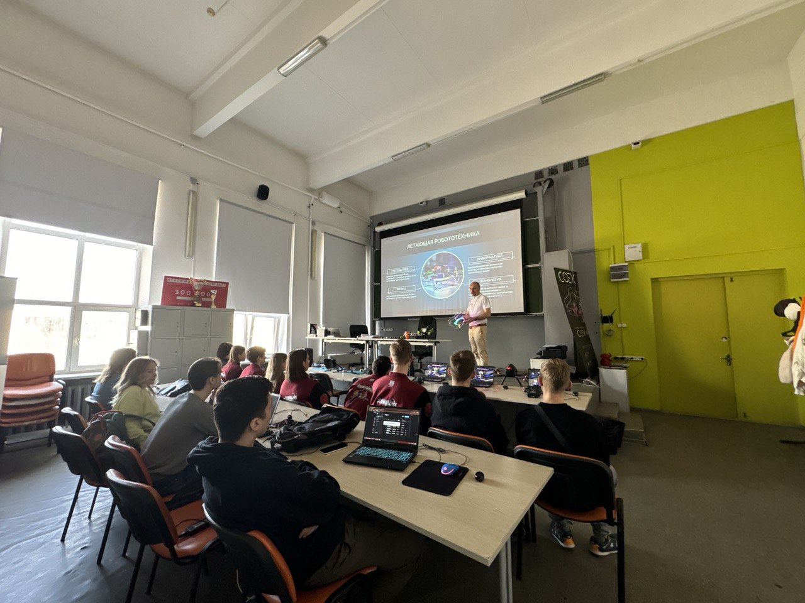
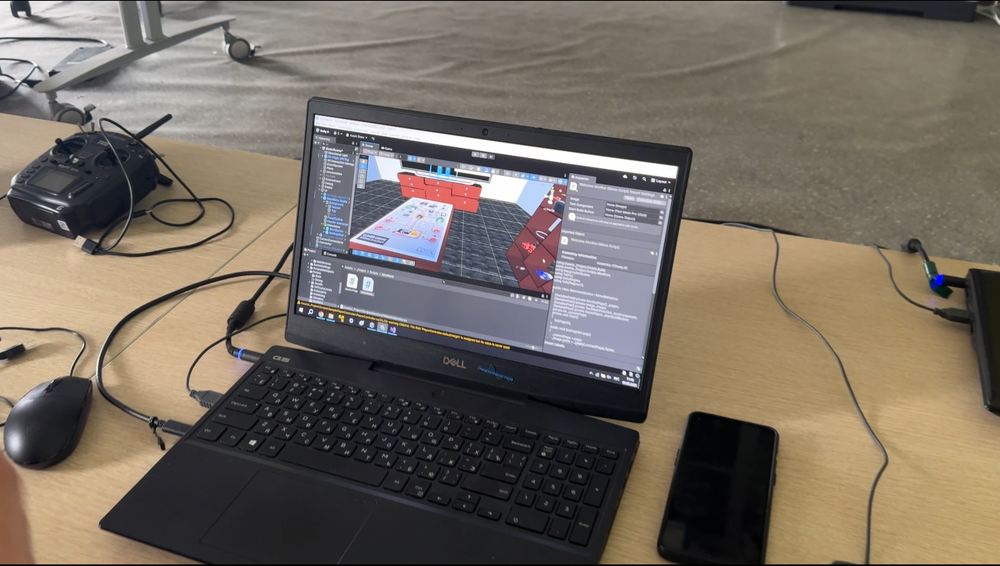
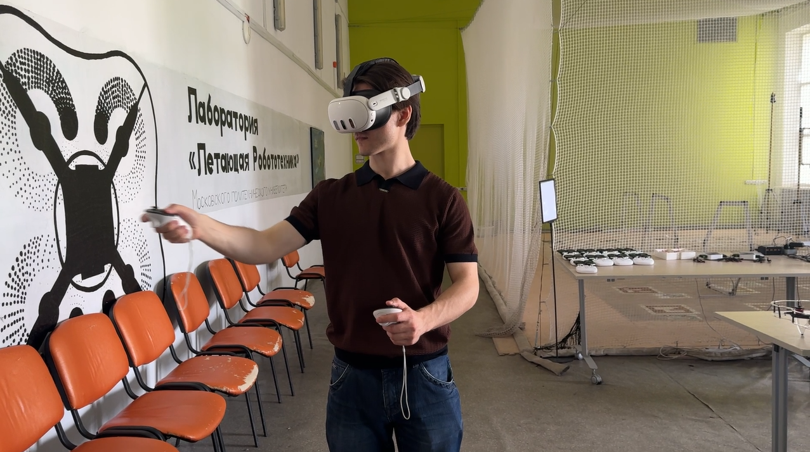

Журнал проекта
15 февраля 2025 - Начало работы
Сформирована команда, распределены роли, составлен план работ на семестр.
1 апреля 2025 - 3D моделирование
Завершено создание основных 3D моделей компонентов квадрокоптера.
20 апреля 2025 - VR прототип
Реализована базовая VR-механика сборки компонентов в виртуальной среде.
